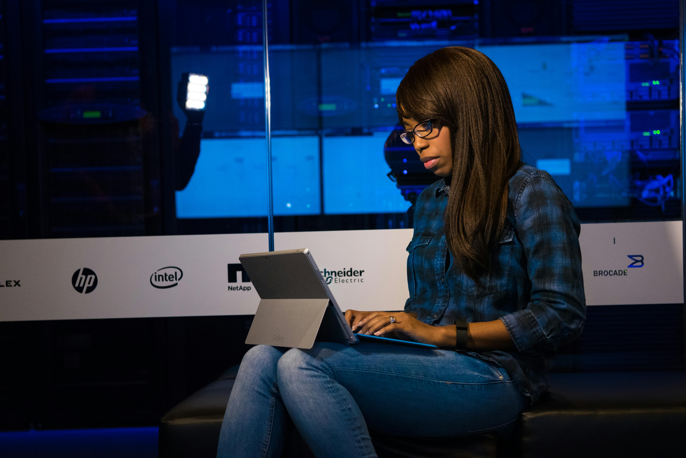
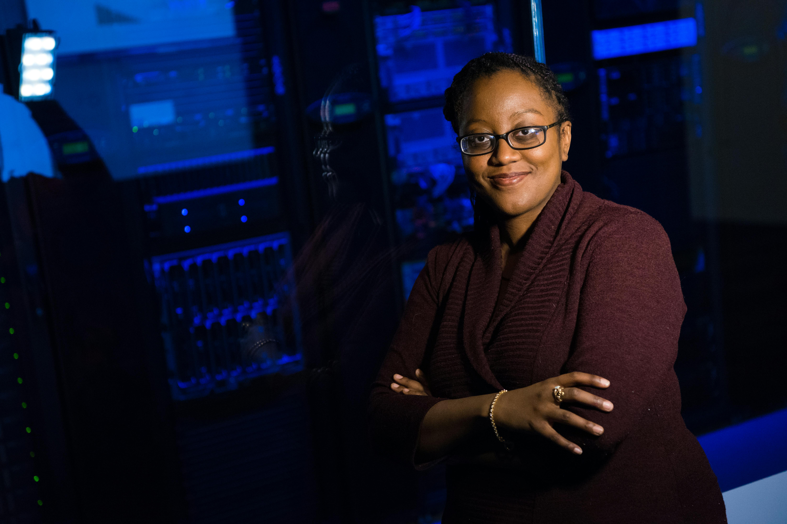

Aïssatou Diallo
Fondatrice & CEO, Teranga Pay
Sénégal
Business48 experts panafricains montent sur scène en 2026. Voici un aperçu de la programmation — filtrez par thématique.
Fondatrice & CEO, Teranga Pay
Sénégal
Business
Directeur IA, Sahel Digital Labs
Ghana
IA & Tech
Partner, Baobab Ventures
Afrique du Sud
Business
VP Produit, Kora Systems
Égypte
Data
Directrice Mobilité, Jokko Telecom
Sénégal
IA & Tech
Chief Data Officer, Dunya Cloud
Nigeria
Data
Lead Designer, Ayo Studio
Côte d'Ivoire
Design
Fondatrice, Nala Logistics
Nigeria
Business
Ingénieure Machine Learning, Tumaini Data
Kenya
IA & Tech